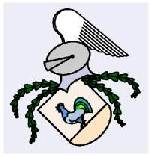
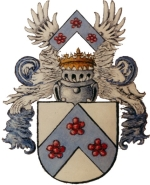
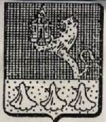
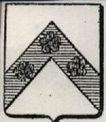
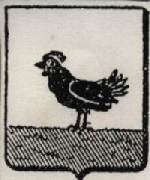
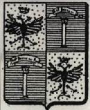
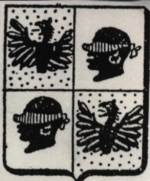
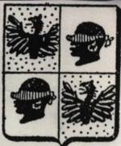

HENNINGWAPENS
Deutsch | English
Dit het algemene gebruik geword by die ridders van die middeleeue om hul persoonlike kenteken op die skild wat hulle gedra het, aan te bring. Uit hierdie gebruik het familiewapens sy ontstaan gehad.
Familiewapens het in die tweede helfte van die twaalfde eeu in Europa ontstaan. Die behoefte by die mens om sy persoonlikheid deur middel van ‘n simbool te identifiseer, is egter so oud soos die mensdom self.
Ons is tans bewus van slegs drie families — een in Suid-Afrika en twee in Duitsland wat spesifieke familiewapens gebruik. Verskeie Henning/ Hennings/ Hennig wapens het egter deur die eeue ontstaan. In die gesaghebbende publikasie "Armorial Général" deur J B Rietstap, wat deur Rolland geïllustreer is, verskyn daar nie minder as 112 000 familiewapens, waarvan elf (11) as Henning/ Hennings/ Hennig wapens geidentifiseer is. Hierdie wapens word ook vertoon.
WAPENS WAT TANS DEUR SPESIFIEKE HENNING FAMILIES GEBRUIK WORD
Peter Henrich Henning Familiebond
 |
Die wapen van die Peter Henrich Henning Familiebond van Suid-Afrika. Hierdie wapen is amptelik by die Staatsheraldikus van Suid-Afrika geregistreer (Goewermentskennisgewing no 1353 in Staatskoerant 9791 van 21 Junie 1985). Die simboliek van die wapen word op die webbladsye van die Familiebond verstrek — Hoofstuk 1 van die Geslagsregister van die Hennings van Suid-Afrika |
Die Henning familie wat te Demmin en Karnin, Duitsland gewoon het
|  |
Die Henning familie wat hierdie wapen vanaf die Middeleeue, tot vandag toe gebruik, het oorspronklik gewoon te Demmin in die omgewing van Stralsund en Greiffswalt, Mecklenburg-Vorpommern,Duitsland, en later te Karnin (naby Stralsund). Tot en met die 30-jarige Oorlog (1618 – 1648) het hierdie gebiede in die grondgebied van Denemarke geval. Dit is die gebied waar die naam Henning teen ongeveer 1290 ontstaan het. Vergelyk hierdie wapen met die wapen hier onder met naam, Henning, Allem (agne) |
Die HENNING en VON HENNING nasate van Laurentius Henning van Rudolstadt.
|  |
Laurentius Henning (* Rudolstadt 28-3-1602) was die oudste seun van Caspar Henning (*1575) wat teen die einde van die sestiende eeu van Frankenhausen gekom en hom te Rudolstadt (Duitsland) gevestig het.
Laurentius is gedurende 1660 tot die adelstand in Wenen toegelaat en het dus die reg gekry om die naam "VON HENNING AUF SCHÖNHOFF" en die familiewapen hiernaas te gebruik. Hy en sy nasate het tot die Pruisiese militêre adelstand behoort. Die geslagsregister van hierdie familie word onder die hofie "Genealogie", "Duitsland", "Deutschland 2" gevind.
Vergelyk hierdie wapen met die wapen hieronder met naam, "Henning de Schönhoof, Prusse"
|
ANDER HENNING/ HENNINGS/ HENNIG WAPENS WAT OPGESPOOR IS
Henning / Hennings/ Hennig wapens wat in Rietstap se naslaanwerke opgeneem is
Henning. Silesie. Riga. Nórdlin
|  |
Die Henning familie wat hierdie wapen gebruik het, het gewoon in die gebiede wat vandag in die grondgebied van Pole en Latvia val. |
Henning. Courlande
 |
Die Henning familie wat hierdie wapen gebruik het, het gewoon in die gebied wat vandag in die grondgebied van Latvia val. |
Henning de Schönhoff. Prusse
|  |
Die Pruisiese familie wat hierdie wapen gebruik het, het gewoon in die gebied wat vandag in die grondgebied van Duitsland val |
Henning de Wassem. P. de Cologne
 |
Die familie wat hierdie wapen gebruik het, het in die omgewing van Keulen, Duitsland gewoon |
Henning. Allem (agne)[Duitsland]
|  |
Hierdie wapen stem ooreen met die wapen wat deur die Henning familie van Demmin/ Karnin (hier bo) gebruik word. |
Hennings. Pom
|  |
Let op dat hierdie familie hulle van as Hennings aandui. Pom is in alle waarskynlikheid die afkorting vir Pommern |
Hennings. Brunswick (Orig. de Dan)
 |
Nog 'n Hennings familie. Oorspronklik van Denemarke |
Hennig de Hennisky. Allem
 |
Hierdie familie het in Duitsland gewoon. In alle waarskynlikheid 'n variasie van die Henning wapen van die Demmin/ Karnin Henning familie.
|
Hennig. Bav.
   |
Twee variasies van die wapen wat 'n Hennig familie van Bavaria, Duitsland gebruik het
|
Hennig. Prusse
 |
Die wapen van 'n Hennig familie van Pruise (vandag deel van Duitsland) |